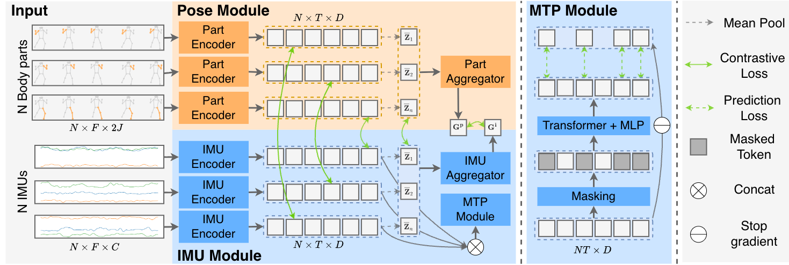
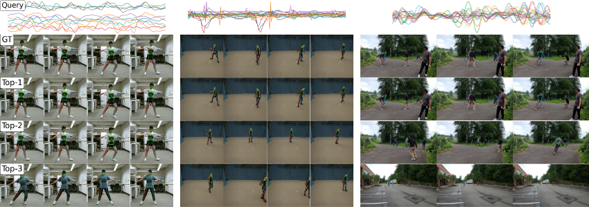
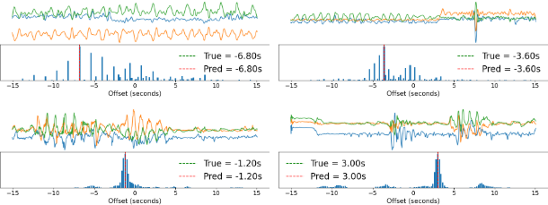
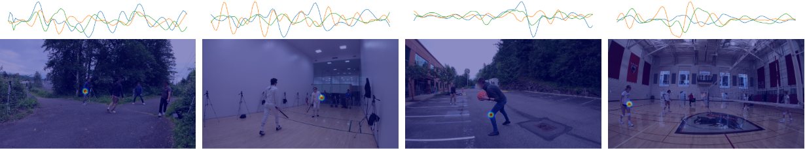

@InProceedings{nguyen2026mobind,
author = {Nguyen, Duc Duy and Chin, Tat-Jun and Hoai, Minh},
title = {MoBind: Motion Binding for Fine-Grained IMU--Video Pose Alignment},
booktitle = {IEEE/CVF Conference on Computer Vision and Pattern Recognition (CVPR)},
year = {2026},
}